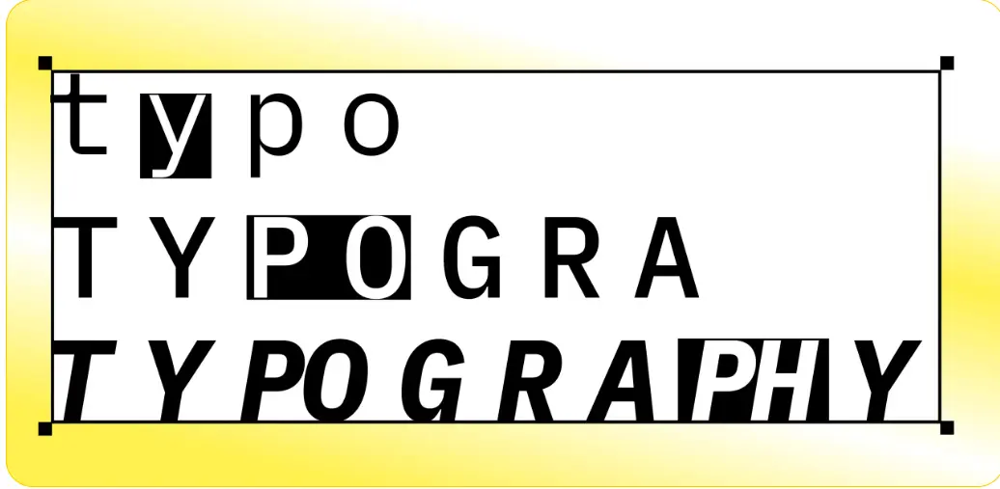

Типографика: какие задачи в дизайне решает
В 1984 году исследователи из Microsoft и MIT провели эксперимент и выяснили, что хорошо оформленный текст люди читают охотнее и быстрее. Так работает типографика в дизайне: правильно подобранные шрифт, цвет и контраст «цепляют» внимание и лучше доносят мысль.
Что такое типографика
Типографика — это всё, что касается оформления текста в дизайне: шрифты, размер, цвет и начертание букв. Главная цель — объединить визуальную и текстовую составляющую в единое целое. Раньше типографику применяли для оформления книг, буклетов, вывесок, афиш. Теперь её используют во всех сферах дизайна: от графического до веб-дизайна. Знание правил типографики — одно из ключевых для дизайнеров, верстальщиков, креативных специалистов и арт-директоров.
Основные термины типографики
Шрифт
Уникальный способ начертания букв, цифр и символов: по форме, пропорциям, расстоянию между элементами.
Иногда компании создают свои шрифты, чтобы стать более узнаваемыми и выделить свои продукты на фоне конкурентов. В Яндексе используют собственный шрифт — Yandex Sans.
Yandex Sans одинаково хорошо читается на больших мониторах и мобильных устройствах, гармонично выглядит в названиях интерфейсов и текстах статей. В зависимости от ситуации используют разные начертания и толщину шрифта, например для самых мелких надписей и разных ОС.
Он немного похож на Arial, но имеет свой лаконичный, нейтральный, но узнаваемый стиль, который помогает донести информацию, не отвлекая внимание.
Гарнитура
Группа шрифтов, которые объединены одной стилистикой, например Courier или Georgia.
Есть две основные группы гарнитур:
- С засечками — например Times или Antiqua. Эти шрифты используют, когда хотят придать тексту более весомый и официальный тон: в книгах, новостных изданиях или объявлениях в общественных местах.
- Без засечек — такие как Arial (см. выше) или Calibri. Такие шрифты часто используют на веб-сайтах, в онлайн-сервисах и приложениях: они облегчают восприятие текста на разных носителях, помогают передать практичность и современность.
Кегль
Высота букв шрифта, которую измеряют в pt (punkt, точка). 1 pt равен 1/72 дюйма, или 0,352 мм. Самый популярный размер, которым обычно набирают тексты для объявлений и веб-документы, — это 12-й кегль. Такой текст удобно читать с небольшого расстояния. Эта статья как раз написана 12-м кеглем.
Интерлиньяж
Расстояние между строками, которое также измеряется в типографских пунктах. Оптимальный интерлиньяж — это кегль + ⅕. Например, для текста, набранного 12-м кеглем, расстояние между строк обычно выставляют в 16 pt.
Кернинг
Расстояние между буквами. Как правило, оно выставляется автоматически в зависимости от выбранного шрифта. Но иногда при вёрстке кернинг увеличивают, чтобы текст лучше читался, или уменьшают — если этого требует дизайн-макет.
Трекинг
Пробелы между фрагментами текста: словами, строками или абзацами. Их также можно уменьшить или увеличить, если нужно сделать текст плотнее или наоборот.
Рубрикация
Внутреннее деление текста: на главы, части, разделы или смысловые блоки с подзаголовками. Рубрикация помогает выстроить структуру текста и упрощает его восприятие. Это особенно актуально для больших текстов: лонгридов, учебных материалов, книг или инструкций.
Графема
Это основная единица текста — буква, цифра, знак препинания или математический символ. Её можно безошибочно отличить по уникальной форме независимо от шрифта или начертания. Например, «а» и «б» — это разные графемы, а «а» и «а» — одинаковые.
Леттеринг
Авторское начертание букв и целого текста, которое выглядит как рисунок и образует единую композицию. Его часто используют в иллюстрациях, вывесках, дизайне упаковок, интерьерных постерах. Технически леттеринг объединяет графический рисунок и типографику, а в его основе лежит каллиграфия — искусство красивого письма от руки, при помощи пера, кисти или специальных маркеров.
Читайте также:
Виды шрифтов: как выбрать лучший вариант для дизайна
Шрифт — не просто набор букв, а важный элемент дизайна. Он формирует стиль и влияет на восприятие информации. Разберём, как выбрать шрифт для проекта и не прогадать.
Харарктеристики текстов
Типографика в графическом дизайне помогает тексту справиться со своей задачей лучше: быть понятней, проще для восприятия и не раздражать. Вот какие характеристики шрифтового оформления текста для этого используют:.
- Удобочитаемость: насколько легко воспринимается текст, хорошо ли различимы буквы и другие символы, можно ли быстро прочитать текст «по диагонали». За это отвечают шрифт, кегль, расстояние между буквами и строками, контраст.
- Заметность: насколько хорошо различим текст на фоне страницы, привлекает ли внимание и не теряется ли на фоне других визуальных элементов даже при слабом освещении. В этом также помогут шрифт и контраст, а ещё — размер букв, полужирное начертание, цвет и другие акценты. При этом важно соблюдать пропорции и подбирать цветовые сочетания в соответствии с фоном и другой графикой: фото, рисунками, логотипами. Иногда выделяют не весь текст, а отдельный, самый важный фрагмент.
- Выравнивание: расположение текста относительно сторон страницы — по левому или правому краю, по центру или по ширине. В типографике веб-дизайна чаще всего используют выравнивание по левому краю: в большинстве языков текст читают слева направо, поэтому такое выравнивание интуитивно привычно и понятно. Выравнивание по ширине используют в книгах, информационных постерах, а также в СМИ, где текст разбит на колонки. Гораздо реже встречается выравнивание по центру или правому краю. Как правило, такое шрифтовое оформление бывает в рекламных баннерах, постерах или на упаковке, где это оправданно с точки зрения композиции и дизайна.
- Стиль: идея и её визуальное воплощение в типографике. Например, для текста, который посвящён средневековой культуре, можно выбрать готический шрифт с элементами леттеринга для первых букв каждой главы или абзаца.
- Контраст: то, за счёт чего текст выделяется на фоне и в сравнении с другой графикой, — например цвет или полужирное начертание.
Правила классической типографики в дизайнах
Классическая типографика — это основы, которые помогают определиться с правильным оформлением текста. Современная типографика во многом опирается именно на них, адаптируя под новые технологии и тренды. Примерно как современная живопись опирается на базовые правила классической.
Вот базовые принципы типографики:
- Использовать не более трёх шрифтов. Чем меньше текст, тем меньше шрифтов допустимо, иначе внимание читателя рассеивается и содержание текста может ускользнуть. При этом все шрифты должны быть объединены стилистически, а ещё лучше — быть из одной гарнитуры. Так текст выглядит цельным и гармоничным, а разные фрагменты или продукты объединяются визуально. Это актуально и для веб-ресурсов, и для онлайн-сервисов или приложений — в том числе в рамках одной экосистемы.
- Придерживаться единой размерной сетки в шрифтовом оформлении. Это касается и кегля, и интерлиньяжа, и кернинга: их в рамках одного текста допустимо варьировать в пределах 1 pt, иначе он будет выглядеть неоднородным и сложным для восприятия.
- Соблюдать оптимальную длину строки. Лучше, если она будет не длиннее 600 pt — иначе будет сложно сфокусироваться и дочитать текст до конца. Слишком короткие строки тоже нежелательны, если только это не список или плакат со слоганами и призывами к действию.
- Разбивать текст на блоки и абзацы. Это нужно по тем же причинам, что и в предыдущем пункте: чтобы удержать внимание читателя, придать тексту логичную структуру и последовательно донести его смысл. Строго говоря, это скорее задача редактора, чем дизайнера или верстальщика. Но иногда текст приходится разбивать на блоки чисто из соображений композиции.
- Выставлять интерлиньяж больше, чем кегль. Расстояние между строками должно быть в полтора раза больше, чем буквы. Например, для 14-го кегля интерлиньяж лучше выставить в 21 pt. Так текст будет выглядеть цельным и собранным, при этом буквы будут достаточно легко читаемы.
- Выбирать шрифт в соответствии с общим дизайном и концепцией. Если это сайт для технологичного продукта или онлайн-сервиса, не стоит набирать текст при помощи Times New Roman или Book Antiqua. Здесь подойдут лаконичные шрифты без засечек.
- Не злоупотреблять акцентами. Даже если нужно сделать акцент и привлечь особое внимание к тексту, набирать его заглавными буквами или слишком большим кеглем — не лучшая идея: это придаёт излишне эмоциональное звучание, вызывает отторжение и беспокойство.
- Располагать текст равномерно по всей полосе. На странице не должно быть больших пустых пространств или, наоборот, слишком плотно заполненных текстом и графикой. Это вредит композиции, а значит — гармоничному восприятию текста. Чтобы этого добиться, можно менять расстояния и размеры букв и строк.
Подпишитесь на сообщество Info.Jurnal
Если вам важно разобраться в цифровых профессиях и принимать решения без спешки — подпишитесь на сообщество журнала.
Подписаться